MDEP: Modular Distributed Embedded Platform
A CH32V203-based motherboard with eight expansion slots and three plug-in modules, designed in KiCad.
Role: PCB design and project development (KiCad schematics and layouts).
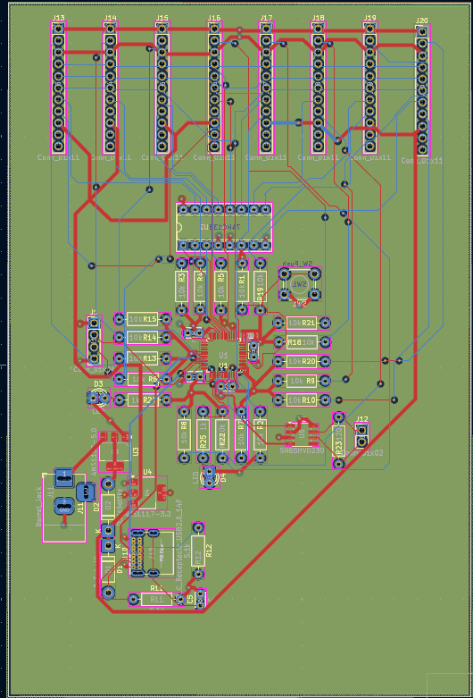
Project status
Designed
Schematics and PCB layouts for all four boards: the motherboard and the Sensor, Motor Driver and Audio modules.
Planned
Fabrication, hardware bring-up, and firmware, including the SPI WHO_AM_I module identification.
Validated
Nothing yet. No board has been fabricated or tested.
Overview
Most embedded boards are one fixed design: adding a motor driver or an audio chip means redesigning the board. MDEP splits the system into a motherboard and plug-in modules, so a sensor, motor or audio function can be added, removed or debugged on its own.
The motherboard includes a hardware presence-detect arrangement for each slot, and each slot has its own polyfuse intended to help limit the effect of an overcurrent. These protections have not yet been verified on fabricated hardware; their real-world performance will be established during bring-up and testing.
System architecture
Swipe the diagram sideways to see all of it.
- Common slot: all eight slots use the same standardized 11-pin connector.
- One shared SPI bus: the CH32V203 talks to every slot over the same SPI lines. The 74HC138 turns three address lines into one chip-select per slot, so only one slot is addressed at a time.
- Power: two supply inputs are combined with diodes (diode-OR). Each slot is fed through its own polyfuse.
- Detecting a module: each slot has a hardware presence-detect (pull-up/ground). Identifying which module is plugged in is planned for firmware.
Motherboard design
What is designed
- CH32V203C8T6 (RISC-V) main controller
- 4-layer PCB
- Eight expansion slots with a standardized 11-pin connector
- Shared SPI, with 74HC138 chip-select decoding
- Dual power input combined with diode-OR
- Per-slot polyfuses (Bourns MF-RG300), added after the main design was complete
What is not done
- No board fabricated
- No power-up or electrical checks
- No firmware written or tested
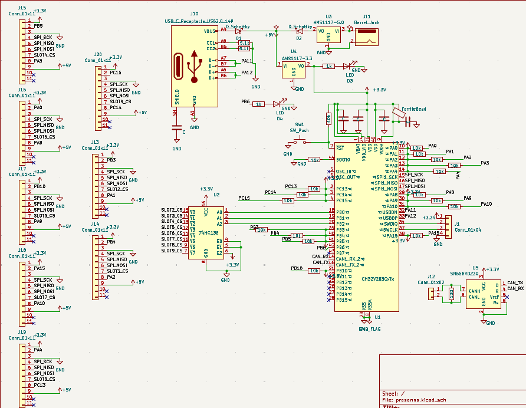
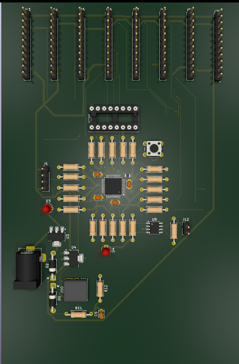
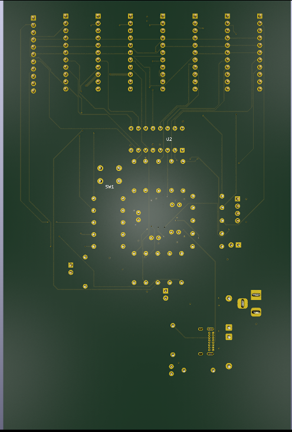
Plug-in modules
Each module connects to the motherboard through the same 11-pin slot connector. Images are KiCad screenshots and renders of the designs.
Sensor Hub
Built around its own CH32V203, with five connectors for external I2C sensors. The connectors provide the hardware interfaces for different I2C sensors; automatic detection and configuration would require firmware. No sensors are currently fitted.
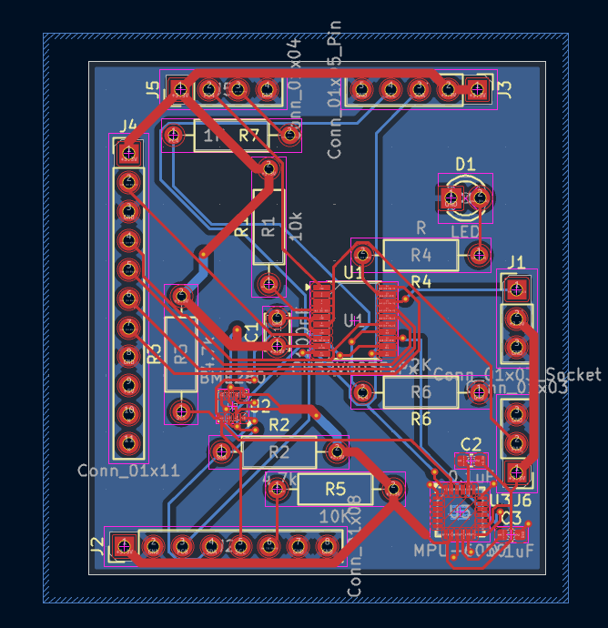
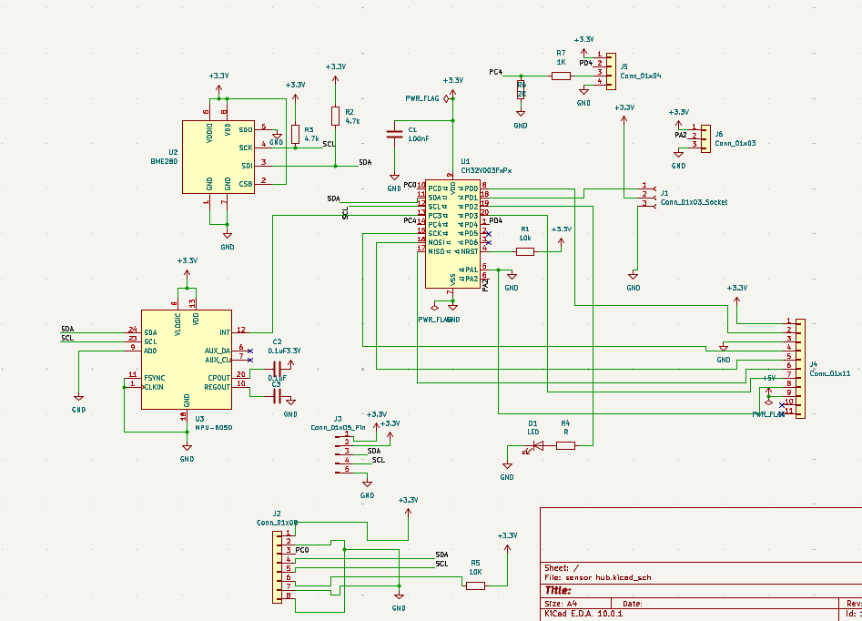
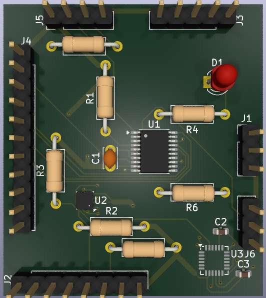
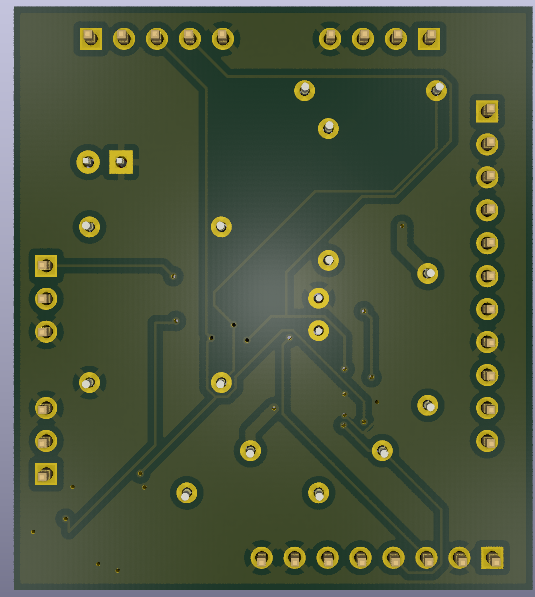
Motor Driver Hub
Built around its own CH32V203 and a TB6612FNG intended to drive two motors. Encoder interfaces are included for future motor-speed (RPM) measurement; this function has not yet been implemented or tested.
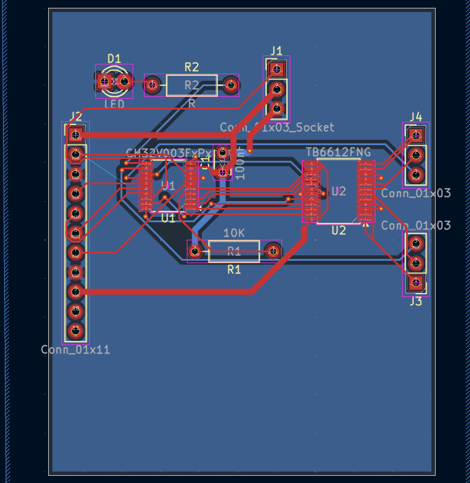
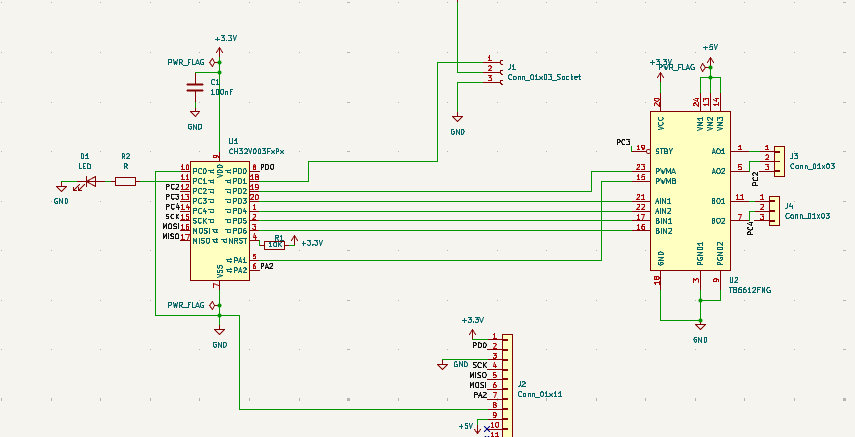
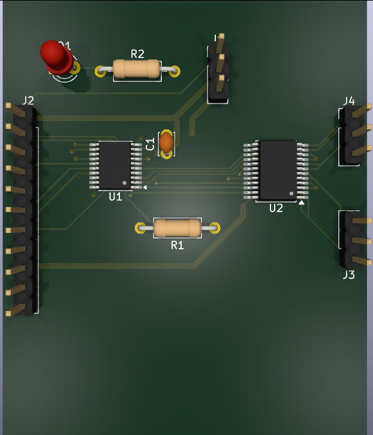
Audio Hub
Built around an ESP32-S3, chosen for its built-in wireless. The design includes a microphone, a speaker, a USB-C receptacle and a display. This is also the board where the thermal-via rule violation described under design review was found and fixed.
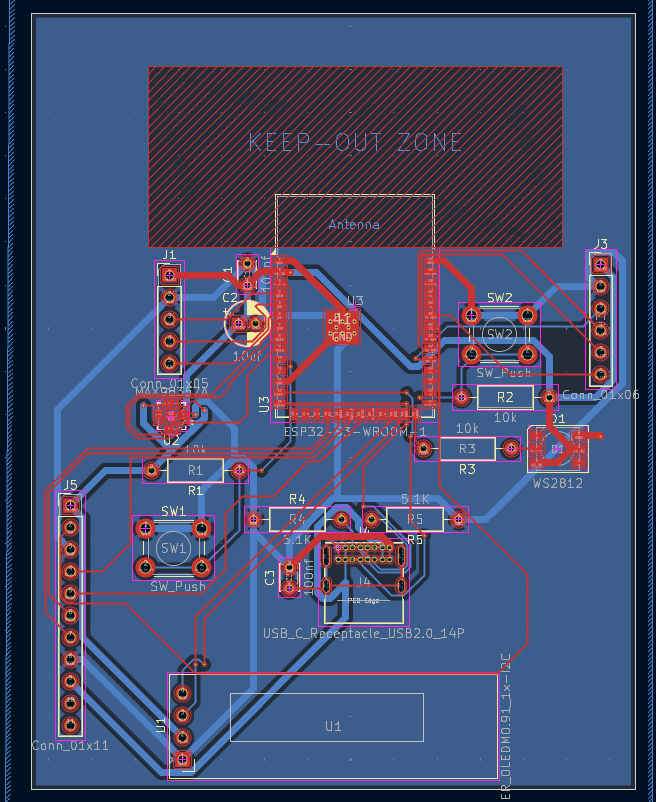
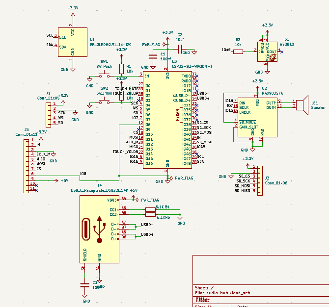
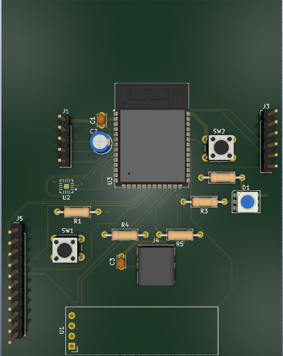
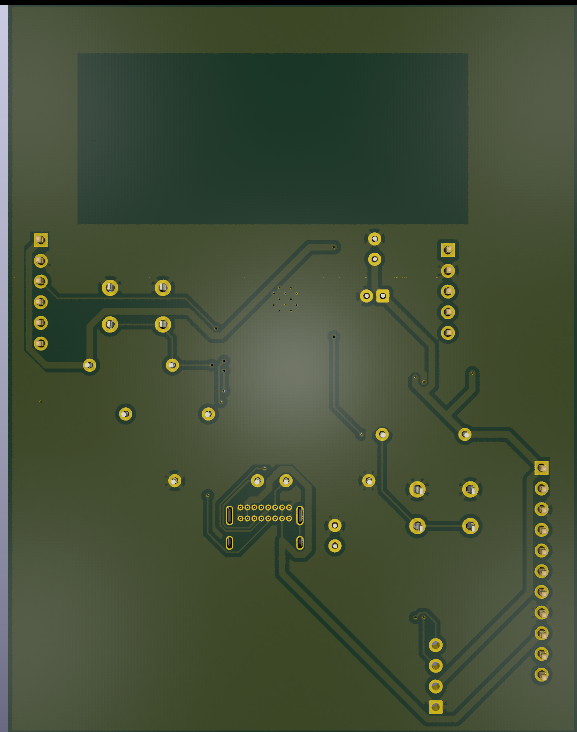
Engineering decisions and trade-offs
| Decision | Why | Trade-off |
|---|---|---|
| 74HC138 chip-select | Three address lines select one of eight slots, so the MCU does not need eight separate chip-select pins. | Only one slot is addressed at a time, and one decoder caps the design at eight slots. It adds a part to the board. |
| Standardized 11-pin connector | All MDEP-compatible modules use the same 11-pin connector and pinout, allowing them to be installed in any expansion slot. | Every module has to work within the same fixed 11 signals, with no room for module-specific extras. |
| Presence-detect in hardware, identification planned in firmware | A hardware pull-up/ground check is designed to indicate whether a module is present, without module firmware. A separate SPI WHO_AM_I handshake is planned to identify the module type; this firmware is not yet implemented. |
Presence-detect alone does not say which module it is, and the identification step does not exist until the firmware is written and tested. |
| Diode-OR dual power input | Two supplies can feed the board without one feeding the other. | Each diode drops some voltage and dissipates power. It is passive, so there is no controlled switchover between sources. |
| Per-slot polyfuses | They are intended to help limit an overcurrent on one slot and reduce the chance of it affecting the shared supply. | They respond slowly and only above their trip current, so they do not cover every fault. They add a little series resistance. |
| Different MCUs on different boards | The CH32V203 is cheap and easy to build with. The ESP32-S3 is used where wireless is needed. | Two MCU families mean two toolchains and firmware setups to maintain. |
Design review and debugging
Problems found and corrected while reviewing the schematics and layouts. Each includes what to check once real boards exist.
1. Pull-up resistors connected to the wrong net
- What was wrong
- Pull-up resistors were connected to the wrong net, causing the affected signal lines to be incorrectly biased towards 3.3V.
- Why it mattered
- The mistake was silent. The schematic looked complete, but those lines could not have behaved as intended.
- What changed
- The pull-ups were reconnected to the correct net.
- Check at validation
- Measure the idle voltage on each affected line before plugging in any module.
2. Inline decoupling capacitors breaking net connectivity
- What was wrong
- Decoupling capacitors had been placed inline on a net, which broke its connectivity.
- Why it mattered
- Placing a decoupling capacitor in series with a supply path can interrupt the intended DC connection. Decoupling capacitors should instead connect between the supply rail and ground, close to the device power pins.
- What changed
- The net connectivity was corrected so the capacitors are no longer in series with the supply.
- Check at validation
- Check continuity of each supply net on the bare board, then confirm the rail reaches every IC supply pin.
3. ESP32-S3 thermal vias failing design-rule checks
- What was wrong
- The thermal via hole size for the ESP32-S3 footprint produced DRC violations.
- Why it mattered
- A board that fails its own design rules may not be manufacturable at the specified sizes.
- What changed
- The thermal-via dimensions were adjusted to 0.2 mm, which cleared the reported DRC errors. The final dimensions still need to be checked against the PCB fabricator’s capabilities.
- Check at validation
- Confirm the chosen fabricator's minimum drill and via specifications before ordering.
Current status and next steps
- Export manufacturing files and fabricate the boards
- Hardware bring-up: power-up and checks on the supply, diode-OR and polyfuses
- Verify SPI communication and the hardware presence-detect
- Write and test firmware, including
WHO_AM_Imodule identification - Test each module, then the complete platform
- Research paper on the architecture (target: April 2027)
Tools and skills
Used so far (design work)
- KiCad schematic capture
- 4-layer PCB layout
- Design-rule checking (DRC)
- Power input design: diode-OR, polyfuses
- Connector standardization and chip-select decoding
Planned (not yet done)
- SPI firmware on the CH32V203
- Module identification over SPI
- Board bring-up and testing
Contact
Questions about any design decision are welcome: prasannakakade88@gmail.com
All images on this page are KiCad screenshots or renders of the designs. No board has been fabricated.